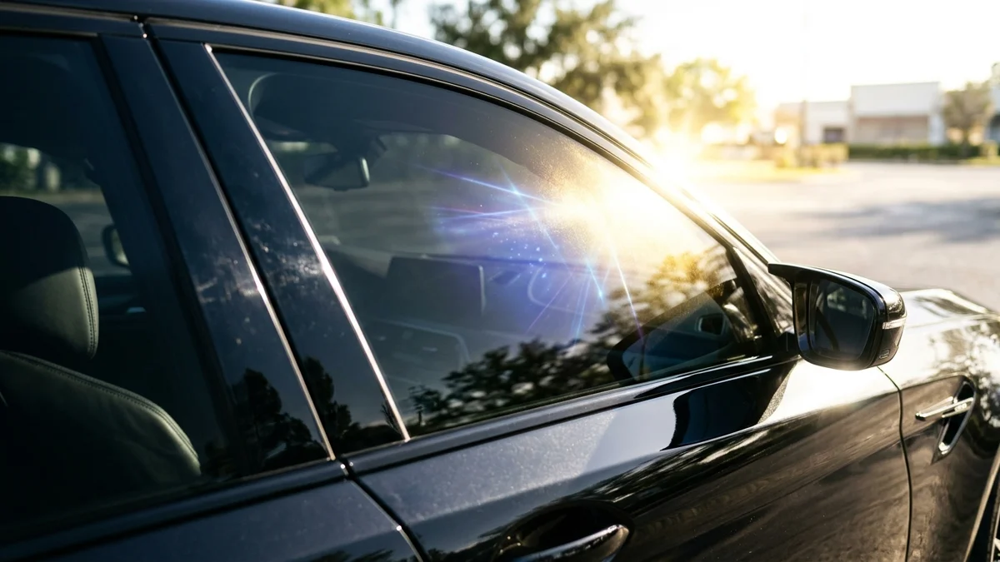
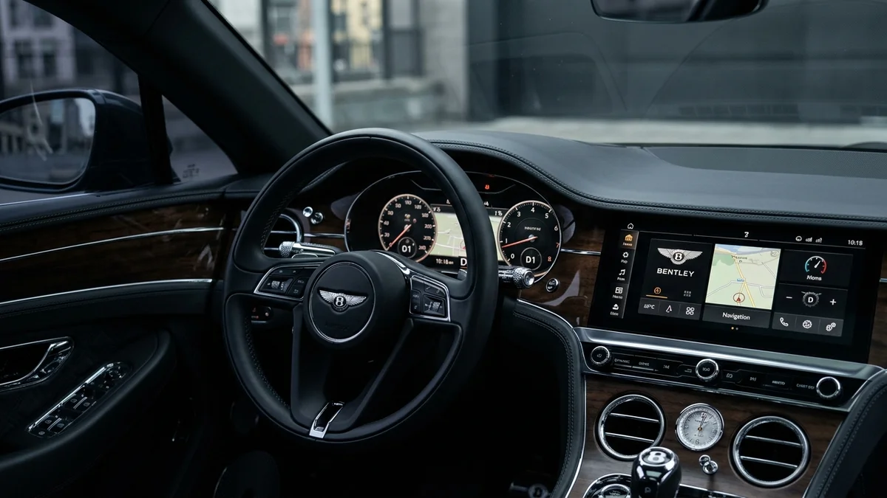

The Health Benefits of UV Protection Window Film for Your Car
By Riverside Tints | September 11, 2026
When most people think of car window tinting, they immediately think of aesthetics and privacy. A sleek, dark tint undoubtedly makes a car look better. But living in Riverside, California, the most important benefit of window tint is entirely invisible: UV protection.
The sun in the Inland Empire is relentless. While we all know to wear sunscreen at the beach, we rarely think about the sun exposure we get during our daily commute. Let's dive into why UV protection window film is a crucial health upgrade for your vehicle.
The Hidden Danger in Your Commute
Standard automotive glass is designed to block UVB rays (the ones that cause sunburn). However, it does a very poor job of blocking UVA rays. UVA rays penetrate deep into the skin, accelerating skin aging (wrinkles and sunspots) and significantly increasing the risk of skin cancer.

Medical studies have shown a higher incidence of skin cancer on the left side of the face and the left arm for drivers in North America, directly correlated to UVA exposure through the driver's side window. This is where premium ceramic window film becomes a medical necessity.
How Ceramic Window Film Protects You
High-quality ceramic window tint, like the LLumar films we install at Riverside Tints, acts as a high-SPF sunscreen for your car. These films are engineered to block up to 99.9% of both UVA and UVB rays.
- Skin Health: By blocking harmful radiation, window film helps prevent premature skin aging and reduces your risk of skin cancer. In fact, The Skin Cancer Foundation recommends window tint as part of a comprehensive sun protection program.
- Eye Protection: Glare from the sun isn't just annoying; it causes eye strain and fatigue. Quality tint significantly reduces glare, making your commute safer and more comfortable for your eyes.
Protecting Your Vehicle's Interior
It's not just your skin that suffers from UV exposure. The interior of your car takes a massive beating from the sun.

UVA rays cause leather seats to dry, crack, and fade. They cause dashboards to warp and plastic trim to discolor. UV protection window film preserves the pristine condition of your interior, maintaining your car's resale value over the long term.
Upgrade Your Sun Protection Today
If you're driving around Riverside without premium window tint, you're exposing yourself to unnecessary risks every time you get behind the wheel. Don't rely on standard auto glass to protect your health. Contact Riverside Tints today to upgrade to high-performance, UV-blocking ceramic window film.